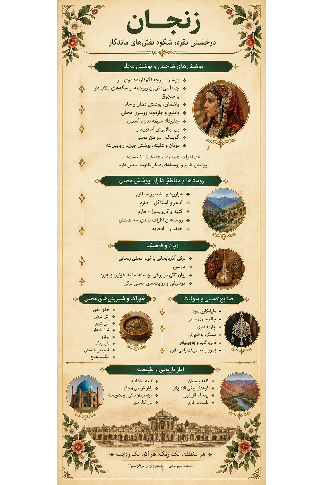

۱. تصویر زنجان؛ روایت یک سرزمین
1. Zanjan in Art: A Land's Story
در این اثر، پوشش سنتی زنان زنجان در کنار معماری تاریخی، چشماندازهای رنگارنگ کوهستان، هنر فلزکاری و خوراکهای محلی قرار گرفته است؛ عناصری که هرکدام بخشی از حافظه فرهنگی این سرزمین را روایت میکنند.
This artwork brings together traditional women's clothing, historic architecture, colorful mountain landscapes, metalwork, and local foods. Each element tells part of Zanjan's cultural memory.

اثر تصویری زنجان از مجموعه «ایران، هزار رنگ»
The Zanjan artwork from “Iran, A Thousand Colors”
از نقشهای لباس زنان تا درخشش هنر دست، زنجان سرزمینی است که اصالت را در جزئیات حفظ کرده است.
From the patterns of women's clothing to the brilliance of handmade crafts, Zanjan is a land that preserves its heritage in every detail.
این تصویر، اثر هنری مجموعه است؛ توضیحات این صفحه برای معرفی فرهنگی و تاریخی استان ارائه شدهاند.
This is the artwork created for the collection. The descriptions on this page provide cultural and historical context about the province.
۲. پوشش زنان زنجان؛ زیبایی در جزئیات
2. Women's Dress in Zanjan: Beauty in the Details
پوشاک سنتی زنان زنجان از اجزای گوناگونی تشکیل میشد و در هر ناحیه، با توجه به شرایط زندگی و سنتهای محلی، تفاوتهایی داشت. پیراهنهای بلند، شلوارهای محلی، جلیقههای سوزندوزیشده و پوششهای متنوع سر و صورت، از ویژگیهای قابل توجه این پوشاک هستند. در برخی نواحی طارم، نمونههایی از این پوشش هنوز در حافظه و زندگی مردم حضور دارند.
Traditional women's clothing in Zanjan consisted of several elements, with variations shaped by local customs and ways of life. Long dresses, traditional trousers, embroidered waistcoats, and distinctive head and face coverings are among its notable features. In parts of Tarom, examples of this dress remain part of local memory and life.

لیبل اختصاصی زنجان؛ راهنمای تصویری پوشش، جاذبهها و فرهنگ محلی
Zanjan's exhibition label: a visual guide to clothing, landmarks, and local culture
چنهآلتی و یاشماقChene-alti and Yashmaq
چنهآلتی از زیورهای سنتی زیر چانه بود که میتوانست از سکههای قلابدار یا منجوق ساخته شود و گاه تا بخش بالایی سر امتداد پیدا کند. یاشماق نیز پوششی برای دهان، چانه و گردن بود.
Chene-alti was a traditional ornament worn beneath the chin, sometimes made of linked coins or beads and extending towards the top of the head. Yashmaq covered the mouth, chin, and neck.
کوینک و تومانKöynək and Tuman
کوینک به پیراهن محلی و تومان به شلوار یا تنبان گفته میشد. در برخی روایتهای پوشاک زنجان، تومان بلند و کوتاه با نامهای متفاوتی مانند اوزون تومان و قیسا تومان شناخته میشوند.
Köynək refers to the traditional shirt, while tuman refers to trousers. Some local accounts distinguish long and short versions, known as uzun tuman and qisa tuman.
جلیزقا و یلJelizqa and Yel
جلیزقا نوعی جلیقه بدون آستین و یل بالاپوشی آستیندار بود. جلیقهها در بعضی نمونهها با پولدوزی و تزئینات سنتی آراسته میشدند.
Jelizqa was a sleeveless waistcoat, while yel was a long-sleeved outer garment. Some waistcoats were decorated with traditional embroidery and embellishments.
پوشن و زیورآلاتPooshan and Ornaments
پوشن پارچهای برای نگهداشتن مو و پوشش سر بود. انگشتر، النگو و زیورهای سکهای یا منجوقی نیز در آراستن پوشاک زنان نقش داشتند.
Pooshan was a fabric head covering used to hold the hair in place. Rings, bracelets, and ornaments made with coins or beads also complemented women's dress.
نام و شکل اجزای پوشاک ممکن است در روستاها و دورههای مختلف تفاوت داشته باشد؛ بنابراین نباید یک نمونه را به همه زنان استان تعمیم داد.
The names and forms of clothing elements may vary between villages and historical periods; one style should not be generalized to all women in the province.
۳. روستاهای زنجان؛ روایتهای زنده محلی
3. Zanjan's Villages: Living Local Stories
استان زنجان از روستاهای کوهستانی، دشتهای حاصلخیز و نواحی باغداری تشکیل شده است. در هر ناحیه، زبان، پوشش، خوراک و شیوه زندگی مردم بخشی از هویت محلی را میسازد. روستاهای طارم بهویژه برای شناخت پوشاک سنتی زنان و فرهنگ کشاورزی منطقه اهمیت دارند.
Zanjan Province includes mountain villages, fertile plains, and agricultural areas. In each region, language, clothing, food, and everyday life contribute to local identity. The villages of Tarom are particularly important for understanding women's traditional dress and the area's agricultural culture.
هزاررود؛ طارمHazarroud, Tarom
روستای هزاررود از نقاطی است که پوشاک محلی زنان طارمی در آن ثبت و معرفی شده است. چنهآلتی، جیلیقا، کوینک، شلوار، تومان، یایلیق و یاشماق از اجزای نامبردهشده در این پوشش هستند.
Hazarroud is one of the villages where traditional women's clothing of Tarom has been documented. Its recorded elements include chene-alti, jiliqa, köynək, trousers, tuman, yayliq, and yashmaq.
سانسیز؛ طارمSansiz, Tarom
سانسیز نیز در گزارشهای مربوط به پوشاک محلی زنان طارمی نام برده شده است. ثبت روایت زنان و خانوادههای این روستا میتواند به شناخت بهتر شیوه پوشش و تغییرات آن در گذر زمان کمک کند.
Sansiz is also mentioned in accounts of Tarom women's traditional clothing. Recording the stories of women and families in this village can help document local dress and how it has changed over time.
روستاهای طارمVillages of Tarom
طارم با باغهای زیتون، انار و چشماندازهای سرسبز شناخته میشود. پیوند زندگی روستایی با باغداری و طبیعت، بخشی از هویت فرهنگی این منطقه است.
Tarom is known for its olive and pomegranate orchards and green landscapes. The connection between rural life, agriculture, and nature is an important part of the region's cultural identity.
خوئین و روستاهای اطرافKhuin and Nearby Villages
برخی روستاهای استان، از جمله خوئین، در کنار زبان ترکی آذربایجانی و فارسی، با گویشها و ویژگیهای زبانی محلی نیز شناخته میشوند. معرفی دقیق هر روستا نیازمند ثبت روایتهای بومی است.
Some villages, including Khuin, are known for local linguistic features alongside Azerbaijani Turkish and Persian. A detailed account of each village requires local documentation.
در معرفی پوشاک روستاها، نام هر لباس باید به همان محدودهای نسبت داده شود که در منابع یا روایتهای محلی ثبت شده است.
When documenting village clothing, each garment should be linked only to the area where it is supported by sources or local accounts.
۴. تاریخ، معماری و طبیعت
4. History, Architecture, and Nature
گنبد سلطانیهSoltaniyeh Dome
گنبد سلطانیه از برجستهترین آثار معماری دوره ایلخانی و از میراث جهانی ثبتشده ایران در یونسکو است. عظمت بنا، گنبد فیروزهای و تزئینات معماری آن، جایگاه ویژهای در تاریخ هنر و معماری ایران دارد.
The Soltaniyeh Dome is one of the outstanding architectural monuments of the Ilkhanid period and a UNESCO World Heritage Site. Its monumental scale, turquoise dome, and architectural decoration make it a landmark in Iranian art and architecture.
معبد داشکَسَنDash Kasan Temple
معبد داشکسن در نزدیکی سلطانیه قرار دارد و به دلیل نقشبرجستهها و حجاریهای خاص خود شناخته میشود. این مجموعه، نمونهای ارزشمند از پیوند هنر سنگتراشی و تاریخ منطقه است.
Dash Kasan Temple, near Soltaniyeh, is known for its distinctive rock carvings and reliefs. The site offers a remarkable example of the relationship between stone craftsmanship and regional history.
قلعه بهستان؛ ماهنشانBehestan Castle, Mahneshan
قلعه بهستان در شهرستان ماهنشان و در کنار رودخانه قزلاوزن قرار دارد. ساختار صخرهای و شکل ویژه این اثر، آن را به یکی از چشماندازهای تاریخی و طبیعی متفاوت استان تبدیل کرده است.
Behestan Castle is located in Mahneshan County beside the Qezel Ozan River. Its rocky structure and unusual form make it one of the province's distinctive historic and natural landmarks.
رختشویخانه زنجانZanjan Rakhtshooykhaneh
رختشویخانه بنایی تاریخی در شهر زنجان است که برای شستوشوی لباسها و استفاده عمومی مردم ساخته شده بود. این بنا امروز بهعنوان موزه، بخشی از زندگی اجتماعی و معماری شهری گذشته را روایت میکند.
The historic Rakhtshooykhaneh in Zanjan was built as a public laundry facility. Today, as a museum, it offers a glimpse into the city's past social life and architecture.
غار کتلهخور و طبیعت زنجانKatale Khor Cave and Zanjan's Nature
غار کتلهخور در محدوده گرماب و شهرستان خدابنده از جاذبههای طبیعی شناختهشده استان است. کوههای رنگارنگ آلاداغلار، رودخانه قزلاوزن و چشماندازهای طارم نیز بخشی از تنوع طبیعی زنجان را شکل میدهند.
Katale Khor Cave, in the Garmab area of Khodabandeh County, is one of the province's best-known natural attractions. The colorful Aladaghlar mountains, the Qezel Ozan River, and the landscapes of Tarom add to Zanjan's natural diversity.
بازار تاریخی زنجان و موزه مردان نمکیZanjan Historic Bazaar and Salt Men Museum
بازار تاریخی زنجان از مجموعههای مهم معماری و تجارت سنتی شهر است. موزه مردان نمکی نیز با نمایش آثار بهدستآمده از معدن نمک چهرآباد، بخشی شگفتانگیز از تاریخ و باستانشناسی منطقه را معرفی میکند.
Zanjan's historic bazaar is an important example of traditional urban architecture and commerce. The Salt Men Museum displays finds from the Chehrabad salt mine and reveals a remarkable chapter of the region's archaeology.